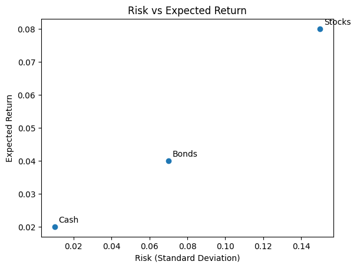

Investing allows your money to grow over time and helps you
achieve long‑term goals such as funding education, buying
a home or building a comfortable retirement. Simply
keeping cash under the mattress causes its value to shrink
as inflation erodes purchasing power. By purchasing
assets—stocks, bonds, real estate and others—you can
harness compound growth and potentially earn returns
that outpace inflation. However, investing always
involves balancing risk and reward: higher
potential returns usually come with greater risk. Stock
markets can rise quickly but also lose value; lower‑risk
assets like savings accounts and government bonds preserve
principal but offer modest growth. Starting early gives
compounding more time to work in your favour.
One way to manage risk is through
diversification. Spreading money across
different assets reduces the impact of any single
investment performing poorly. A classic illustration is
a street vendor who sells both sunglasses and umbrellas to
balance sunny and rainy days. Likewise, holding a mix of
stocks, bonds, real estate and cash can make your
portfolio more resilient. Diversification, along with
careful asset allocation, is central to building a
portfolio that matches your goals and risk tolerance.
Asset Allocation
Asset allocation means dividing your
investment portfolio among different categories—primarily
stocks, bonds and cash equivalents. The appropriate mix
depends on your time horizon—how long until you need
the money—and your risk tolerance—how comfortable you
are with fluctuations in value. A longer time horizon
allows you to take on more risk because you have time to
recover from market downturns, while a shorter horizon
calls for a more conservative mix.
Investors often choose among typical profiles. An
aggressive portfolio might hold 80–90 % in stocks and
the rest in bonds and cash; a moderate portfolio might
target about 60 % stocks and 40 % bonds; a
conservative portfolio might tilt toward bonds and
cash. As you approach a goal, it’s common to shift
gradually from riskier to more conservative investments—a
process called glide‑path investing. Periodically
rebalancing your portfolio back to your target allocation
keeps you from becoming overexposed to one asset class.
Types of Investments
Stocks: When you buy shares in a company you
become a part owner and are entitled to a portion of its
earnings. Over long periods stocks have delivered the
highest average returns because shareholders participate
directly in corporate profits and growth. Stock prices
can swing widely from year to year—rising sharply during
booms and plunging in downturns—which is why they’re
considered higher risk. You can invest in large‑cap or
small‑cap companies, growth or value strategies, and
domestic or international markets depending on your
preferences and goals.
Bonds: Buying a bond is essentially lending
money to a government, municipality or corporation. In
return you receive regular interest payments and the
principal back at maturity. Bonds are generally less
volatile than stocks and provide more predictable income.
Government bonds tend to be safer than corporate issues;
high‑yield (or “junk”) bonds offer higher interest rates but
come with greater risk of default. Municipal bonds can
provide tax‑advantaged income, especially if you live in
the issuing state.
Cash and Cash Equivalents: Savings accounts,
certificates of deposit (CDs) and U.S. Treasury bills fall
into this category. These are the safest assets because
your principal is protected, making them ideal for
emergency funds or short‑term goals. The trade‑off is
that they yield the lowest returns and inflation will
gradually erode their purchasing power if held for long
periods.

Investors must balance risk and reward. Stocks (top right)
tend to offer higher potential returns but come with
greater volatility. Bonds occupy the middle ground,
providing moderate returns with less risk. Cash and cash
equivalents (bottom left) have the lowest risk but also
the lowest expected return.
Index Funds and Exchange‑Traded Funds (ETFs)
An index fund is a type of mutual fund or
exchange‑traded fund (ETF) that seeks to track the
performance of a market index such as the S&P 500 or the
Russell 2000. Because you cannot buy an index itself,
index funds provide an indirect way to invest in all the
companies represented in the index. Many investors use
index funds to gain broad market exposure quickly and at
low cost.
Index funds may invest in all the securities of an index or
just a sampling. In market‑capitalization‑weighted
indexes, larger companies make up a bigger share of the
fund. Some index funds use derivatives like futures or
options to achieve their objective. Because index funds
follow a passive investing strategy and trade
infrequently, they often have lower fees than actively
managed funds and can be more tax efficient. For example,
the SPDR S&P 500 ETF (ticker symbol SPY) charges a
management fee of just a few hundredths of a percent and
gives you exposure to 500 of the largest U.S. companies.
While index funds aim to match the performance of a
benchmark, actively managed mutual funds try to beat the
market by picking specific securities. Some investors
prefer index funds for their simplicity, diversification and
low cost, while others choose active funds hoping that a
skilled manager will outperform the benchmark. Evidence
shows that over long periods, only a minority of active
funds beat comparable index funds after fees.
Mutual Funds vs. ETFs
Mutual funds and ETFs are both
pooled investment vehicles that provide diversification and
professional management. However, they differ in how
shares are bought and priced. Mutual funds sell and redeem
shares directly at the fund’s net asset value (NAV) once
per day after the market closes. ETFs trade on stock
exchanges like shares of individual companies; their price
fluctuates throughout the trading day as investors buy and
sell.
Both mutual funds and ETFs are regulated by the U.S.
Securities and Exchange Commission (SEC) and must follow
securities laws. They allow investors to gain exposure to
a broad portfolio without having to purchase individual
securities. ETFs are often used by investors who value
intraday trading, lower expense ratios and potential tax
efficiencies; however, you may pay a brokerage commission
when buying or selling shares (depending on your broker).
Mutual funds may offer more convenient features for
automatic contributions, reinvestment of dividends and
systematic withdrawals. Some mutual funds charge sales
loads or higher expense ratios, so it’s important to
compare costs.
401(k) Retirement Plans
A 401(k) plan is an employer‑sponsored retirement account
that lets you set aside part of your paycheck before income taxes
are taken out. Most plans allow you to contribute a percentage
of your salary up to an annual limit set by the Internal Revenue
Service (the limit has been in the low twenties of thousands of
dollars in recent years, with an additional catch‑up allowance
for workers age 50 or older). Many employers offer a
matching contribution on the first few percent you defer. At
a minimum, you should contribute enough to get the full match—
it’s essentially “free money” that can significantly boost your
savings.
Contributions to a traditional 401(k) reduce your current taxable
income and grow tax‑deferred; you don’t pay taxes on the money
until you withdraw it in retirement. Some employers also offer
Roth 401(k) options, where you contribute after‑tax dollars and
qualified withdrawals are tax‑free. If you withdraw money
before age 59 ½ you may owe both income tax and a 10 % early
withdrawal penalty, so these accounts are best left untouched
until retirement. Starting in your early 70s you must take
required minimum distributions (RMDs) from a traditional 401(k).
Within a 401(k), you typically select from a menu of mutual
funds and target‑date funds investing in stocks, bonds and
sometimes stable‑value funds. Review the expense ratios and
long‑term performance of the funds offered, and choose an
allocation that matches your risk tolerance and time horizon.
As you change jobs, you can roll your 401(k) balance into a
new employer’s plan or into an individual retirement account
(IRA) to maintain its tax‑advantaged status. The combination
of tax‑deferred growth, employer matching and automatic payroll
deductions makes a 401(k) one of the most effective ways to
save for retirement.